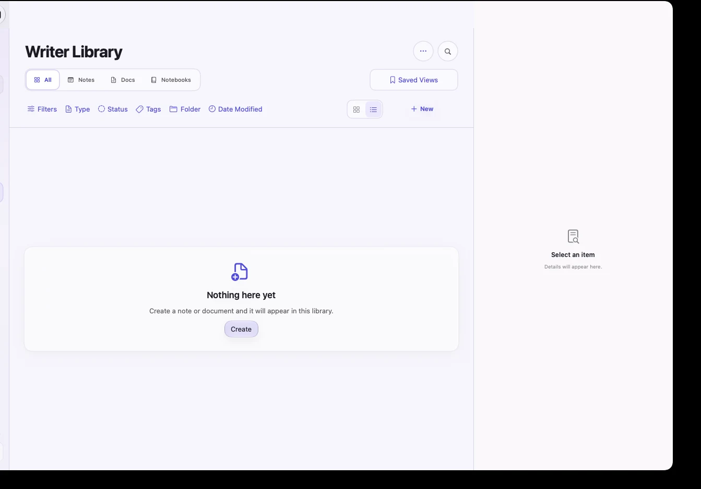

WRITER
Notes when you need speed.
Documents when you need depth.
The Writer Library keeps notes, documents, and notebooks together. Filter by type, folder, status, tags, or date, then open the full editor without leaving the workspace.
- Live Markdown editing
- Notes, documents, and notebooks
- Folders, tags, saved views, and metadata
